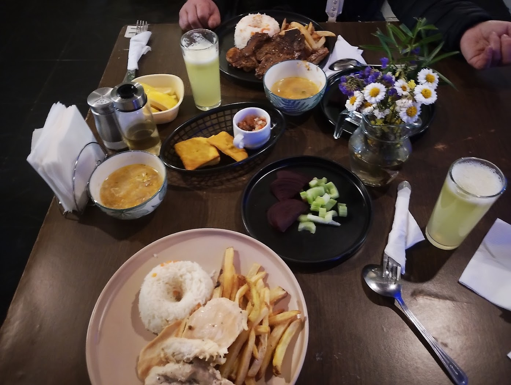
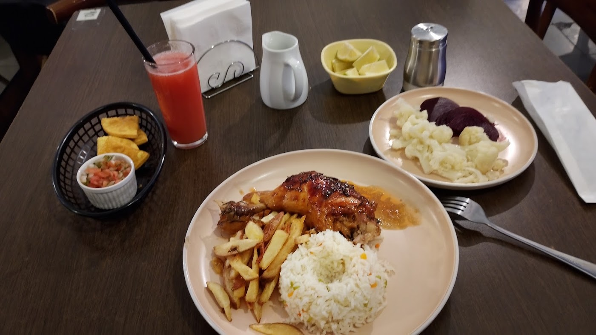
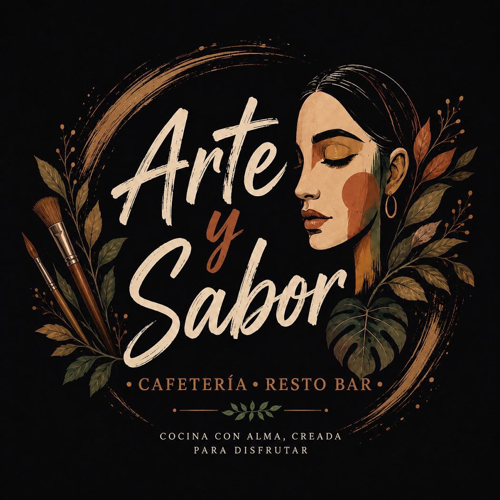

El menú del día
"La comida es MUY RICA. El menú del día siempre se me hace agua a la boca, es demasiado sabroso" — cita textual de una reseña real.

Cafetería · Resto bar · La Cisterna
Menú del día, desayunos contundentes, hamburguesas y café en Gran Avenida 8784. Cinco estrellas, sin excepción.
Seis opiniones en Google y las seis son de cinco estrellas.
"La comida es MUY RICA. El menú del día siempre se me hace agua a la boca, es demasiado sabroso" — cita textual de una reseña real.
La misma reseña sigue: "la comida como los desayunos también, bien contundentes". Con jugos naturales recién hechos.
"Cerveza, papas y hamburguesas súper ricas; la atención es muy buena, además es un lugar muy grato para compartir" — otra reseña real.
Esa frase no es nuestra: es el lema que ellos mismos pusieron en su logo. Arte y Sabor es cafetería y resto bar en Gran Avenida 8784, La Cisterna.
Seis opiniones en Google, las seis de cinco estrellas. Hablan del menú del día, de los desayunos, de las hamburguesas, del café y de la decoración: "lugar muy bien decorado y limpio, vendría de nuevo".


Arma tu pedido y consúltanos. Según el dato que Google recoge de 4 clientes, el gasto promedio va entre $5.000 y $15.000 por persona.
"La comida es MUY RICA. El menú del día siempre se me hace agua a la boca, es demasiado sabroso. La comida, como los desayunos también, bien contundentes."
"Cerveza, papas y hamburguesas súper ricas. La atención es muy buena, además es un lugar muy grato para compartir."
"Súper atentos, los cafés súper ricos, lo mismo con la comida. Lugar muy bien decorado y limpio. Vendría de nuevo."